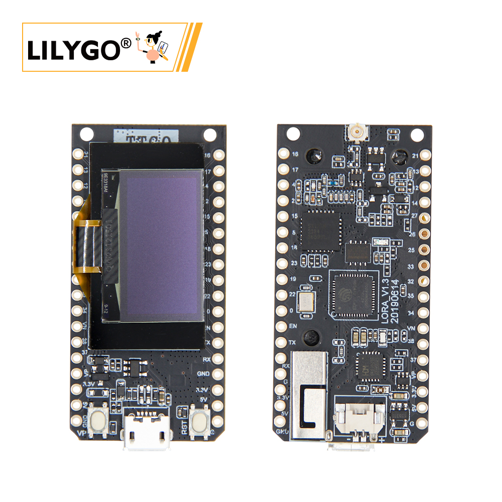

English
EnglishLILYGO LoRa32

Version Iteration:
| Version | Update date | Update description |
|---|---|---|
| T3_V1.6.1 (LoRa32 V2.1.6) | Latest Version | Multi-protocol IoT Development Board |
Purchase Links
| Product | SOC | FLASH | LoRa | Screen | Interface | Link |
|---|---|---|---|---|---|---|
| LoRa32 | ESP32 | 4M | SX1276/SX1278 | 0.96" OLED | USB Micro | LILYGO Mall |
Table of Contents
- Description
- Preview
- Modules
- Quick Start
- Pin Overview
- Related Tests
- FAQ
- Projects
- Resources
- Dependent Libraries
Description
LILYGO T3_V1.6.1 (LoRa32 V2.1.6) multi-protocol IoT development board is a composite hardware platform integrating ESP32 main controller (4MB Flash), 0.96-inch SSD1306 I²C OLED display (128×64 resolution) and low-power LoRa module.
The development board supports SX1276/SX1278 dual-band LoRa modules, provides Wi-Fi + Bluetooth 4.2 + BLE wireless protocols, supports dual power supply modes (USB interface or 3.7V Li-Po battery, with power switching switch), and features TF card expansion slot and hardware reset/start buttons. The LoRa module achieves +14dBm transmission power and 9.9mA ultra-low receive current, suitable for remote environment monitoring, LoRaWAN terminals, low-power sensor gateways and other IoT scenario development.
Preview
Physical Image

Modules
MCU
- Chip: ESP32
- FLASH: 4MB
- Architecture: Xtensa LX6 Dual-core
- Wireless: Wi-Fi 802.11b/g/n + Bluetooth 4.2 + BLE
Display
- Size: 0.96-inch OLED
- Resolution: 128x64px
- Display Type: OLED
- Driver Chip: SSD1306
- Bus Communication Protocol: I2C
- Pins: SDA=IO21, SCL=IO22
LoRa
- Chip: SX1276 / SX1278
- Frequency: SX1276: 868/915/923MHz, SX1278: 433MHz
- Transmission Power: +14dBm
- Receive Current: 9.9mA
Serial Converter
- Chip: CH9102
- Function: USB to Serial
Storage
- Type: MicroSD (TF) Card
- Interface: SPI
Power Management
- Input: USB Micro or 3.7V Li-Po Battery
- Features: Power Switching Switch
Overview
| Component | Description |
|---|---|
| MCU | ESP32 |
| FLASH | 4MB |
| LoRa | SX1276 (868/915/923MHz) / SX1278 (433MHz) |
| Display | 0.96-inch SSD1306 OLED (128×64) |
| Serial Chip | CH9102 |
| Storage | TF Card |
| Wireless | 2.4GHz Wi-Fi + Bluetooth 4.2 + BLE |
| USB | 1 × USB Port (Micro Connector) |
| IO Interface | 2.54mm pitch 2×13 Expansion IO Interface |
| Expansion Interfaces | 3D WiFi Antenna + LoRa External Antenna + 1.25mm JST GH Power Interface |
| Buttons | RESET + BOOT |
| Power Input | 5V/500mA |
| Mounting Holes | 2 × 2mm Positioning Holes |
| Dimensions | 66×36×15mm |
Quick Start
Example Support
./examples/
├── ArduinoLoRa # Only support SX1276/SX1278 radio module (仅支持 SX1276/SX1278 无线电模块)
│ ├── LoRaReceiver
│ └── LoRaSender
├── Display # Only supports TBeam TFT Shield
│ ├── Free_Font_Demo
│ ├── TBeam_TFT_Shield
│ ├── TFT_Char_times
│ └── UTFT_demo
├── GPS # T-Beam GPS demo examples
│ ├── TinyGPS_Example
│ ├── TinyGPS_FullExample
│ ├── TinyGPS_KitchenSink
│ ├── UBlox_BasicNMEARead # Only support Ublox GNSS Module
│ ├── UBlox_NMEAParsing # Only support Ublox GNSS Module
│ ├── UBlox_OutputRate # Only support Ublox GNSS Module
│ └── UBlox_Recovery # Only support Ublox GNSS Module
├── LoRaWAN # LoRaWAN examples
│ ├── LMIC_Library_OTTA
│ └── RadioLib_OTAA
├── OLED
│ ├── SH1106FontUsage
│ ├── SH1106GraphicsTest
│ ├── SH1106IconMenu
│ ├── SH1106PrintUTF8
│ ├── SSD1306SimpleDemo
│ └── SSD1306UiDemo
├── PMU # T-Beam & T-Beam S3 PMU demo examples
├── RadioLibExamples # RadioLib examples,Support SX1276/78/62/80...
│ ├── Receive_Interrupt
│ └── Transmit_Interrupt
├── Sensor # Sensor examples,only support t-beams3-supreme
│ ├── BME280_AdvancedsettingsExample
│ ├── BME280_TestExample
│ ├── BME280_UnifiedExample
│ ├── PCF8563_AlarmByUnits
│ ├── PCF8563_SimpleTime
│ ├── PCF8563_TimeLib
│ ├── PCF8563_TimeSynchronization
│ ├── QMC6310_CalibrateExample
│ ├── QMC6310_CompassExample
│ ├── QMC6310_GetDataExample
│ ├── QMC6310_GetPolarExample
│ ├── QMI8658_BlockExample
│ ├── QMI8658_GetDataExample
│ ├── QMI8658_InterruptBlockExample
│ ├── QMI8658_InterruptExample
│ ├── QMI8658_LockingMechanismExample
│ ├── QMI8658_MadgwickAHRS
│ ├── QMI8658_PedometerExample
│ ├── QMI8658_ReadFromFifoExample
│ └── QMI8658_WakeOnMotion
|── T3S3Factory # T3 S3 factory test examples
└── Factory # T-Beam & T-Beam S3 and BPF factory test examples
PlatformIO
- Install the CH9102 USB bridge driver for the first time.
- Install Visual Studio Code and Python
- Search for the "PlatformIO" extension in
Visual Studio Codeand install it. - After installation, you need to restart
Visual Studio Code. - After restarting
Visual Studio Code, select "File" -> "Open Folder" in the top left corner -> Choose the "LilyGo-LoRa-Series" directory - Wait for third-party dependency libraries to finish installing
- Click to open the
platformio.inifile, then under theplatformiocolumn - Under
default_envs, select the board name you want to use and uncomment it. - Uncomment one line in
src_dir = xxxxto ensure only one line is active. Please note the comments in the examples, which indicate which lines are valid and which are not. - Click the (✔) symbol at the bottom left to compile
- Connect the board to the computer's USB-C interface, Micro-USB interface is for module firmware upgrade.
- Click (→) to upload the firmware
- Click (plug symbol) to monitor the serial output
- If unable to write, or the USB device keeps blinking, please check the FAQ below.
Arduino
- Install the "CH9102 USB Bridge" driver for the first time.
- Install Arduino IDE
- Install Arduino ESP32
- Copy all folders from the "lib" directory to the "Sketchbook location" directory. How to find the location of your own library files? Please refer here
- Windows:
C:\Users\{Username}\Documents\Arduino - macOS:
/Users/{Username}/Documents/Arduino - Linux:
/home/{Username}/Arduino
- Open the corresponding example
- Open the downloaded "LilyGo-LoRa-Series"
- Open "examples"
- Select the example file and open the file ending with "ino"
In Arduino IDE, first select the corresponding board in the Tools menu, then click the corresponding option in the list below to select
| Name | Value |
| ------------------------------------ | ------------------------------------ |
| Board | ESP32 Dev Module |
| Port | Your port |
| CPU Frequency | 240MHZ(WiFi/BT) |
| Core Debug Level | None |
| Erase All Flash Before Sketch Upload | Disable |
| Events Run On | Core1 |
| Flash Frequency | 80MHZ |
| Flash Mode | QIO |
| Flash Size | 4MB(32Mb) |
| JTAG Adapter | Disabled |
| Arduino Runs On | Core1 |
| Partition Scheme | Huge APP (3MB No OTA/1MB SPIFFS) |
| PSRAM | Enable |
| Upload Speed | 921600 |
| Programmer | Esptool |Please uncomment the
utilities.hfile in each example according to your board model, for exampleT3_V1_3_SX1276orT3_V1_3_SX1278, otherwise compilation will report an error.Upload the example
Development Platforms
Pin Overview
LoRa32 1.3
| Name | GPIO NUM | Free |
|---|---|---|
| OLED(SSD1306) SDA | 21 | ❌ |
| OLED(SSD1306) SCL | 22 | ❌ |
| LoRa(SX1276) SCK | 18 | ❌ |
| LoRa(SX1276) MISO | 19 | ❌ |
| LoRa(SX1276) MOSI | 27 | ❌ |
| LoRa(SX1276) RESET | 14 | ❌ |
| LoRa(SX1276) DIO0 | 26 | ❌ |
| LoRa(SX1276) DIO1 | 33 | ❌ |
| LoRa(SX1276) CS | 18 | ❌ |
| Battery ADC | 35 | ❌ |
LoRa32 1.6.1
| Name | GPIO NUM | Free |
|---|---|---|
| OLED(SSD1306) SDA | 21 | ❌ |
| OLED(SSD1306) SCL | 22 | ❌ |
| SD CS | 13 | ❌ |
| SD MOSI | 15 | ❌ |
| SD MISO | 2 | ❌ |
| SD SCK | 14 | ❌ |
| LoRa(SX1276) SCK | 5 | ❌ |
| LoRa(SX1276) MISO | 19 | ❌ |
| LoRa(SX1276) MOSI | 27 | ❌ |
| LoRa(SX1276) RESET | 23 | ❌ |
| LoRa(SX1276) DIO1 | 33 | ❌ |
| LoRa(SX1276) DIO2 | 32 | ❌ |
| LoRa(SX1276) CS | 18 | ❌ |
| Battery ADC | 35 | ❌ |
| On Board LED | 25 | ❌ |
LoRa32 TCXO
| Name | GPIO NUM | Free |
|---|---|---|
| OLED(SSD1306) SDA | 21 | ❌ |
| OLED(SSD1306) SCL | 22 | ❌ |
| SD CS | 13 | ❌ |
| SD MOSI | 15 | ❌ |
| SD MISO | 2 | ❌ |
| SD SCK | 14 | ❌ |
| LoRa(SX1276) SCK | 5 | ❌ |
| LoRa(SX1276) MISO | 19 | ❌ |
| LoRa(SX1276) MOSI | 27 | ❌ |
| LoRa(SX1276) RESET | 23 | ❌ |
| LoRa(SX1276) DIO0 | 26 | ❌ |
| LoRa(SX1276) DIO1 | 32 | ❌ |
| LoRa(SX1276) CS | 7 | ❌ |
| LoRa(SX1276) TCXO EN | 12 | ❌ |
| Battery ADC | 35 | ❌ |
| On Board LED | 25 | ❌ |
- GPIO33 and above of the ESP32 chip can only be used for input functions, not output functions.
- Remove the SD card when uploading code, otherwise the code cannot be downloaded
- TCXO EN must be set high before initializing the radio
Related Tests
Test data to be supplemented
FAQ
Q. What's the difference between LoRa32 and T3-S3?
A. LoRa32 uses ESP32 + SX1276/78 LoRa chip, while T3-S3 uses ESP32-S3 + SX1262/80 LoRa chip, both processor and LoRa chip are different.Q. How to choose between SX1276 and SX1278 versions?
A. Choose according to frequency regulations in your region: SX1276 supports 868/915/923MHz, SX1278 supports 433MHz.Q. OLED display not showing?
A. Check I2C address configuration (SSD1306 is usually 0x3C), confirm SDA=IO21, SCL=IO22 connections.Q. LoRa communication distance not ideal?
A. Check antenna connection, ensure use in open environment, consider using external antenna and properly configure impedance matching.Q. Program flashing failed?
A. Ensure driver installation is correct, hold BOOT button and click RESET to enter download mode.
Projects
Resources
Dependent Libraries
- arduino-LoRa - LoRa Communication Library
- RadioLib - Wireless Communication Library
- U8g2 - OLED Display Library
- Adafruit_SSD1306 - SSD1306 Driver
- ESP8266_SSD1306 - OLED Display Library
- TFT_eSPI - TFT Display Library
- SD - SD Card Library